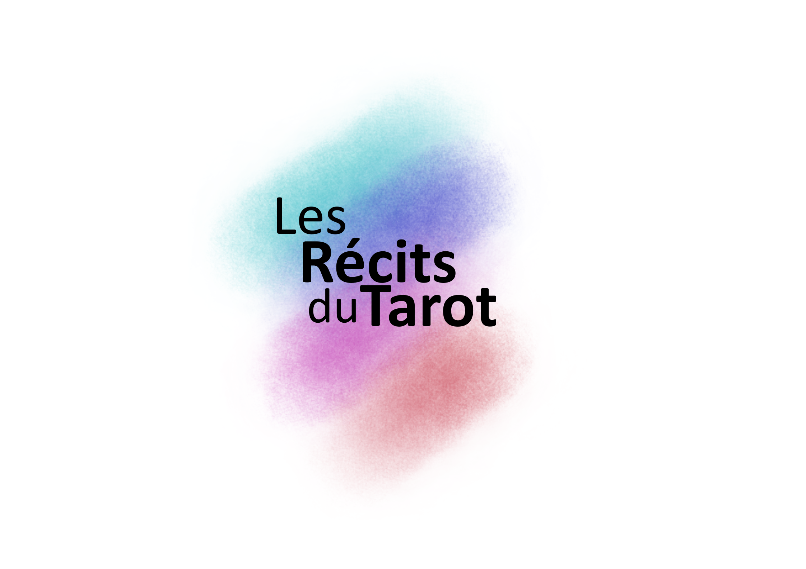

Tirage du Jour
Prenez un instant, posez une question ou laissez simplement l'esprit se poser. Tirez trois cartes pour éclairer une situation : ce qui vous porte, ce qui vous freine, et la direction à explorer.

Prenez un instant, posez une question ou laissez simplement l'esprit se poser. Tirez trois cartes pour éclairer une situation : ce qui vous porte, ce qui vous freine, et la direction à explorer.